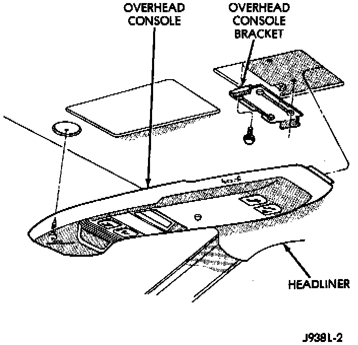
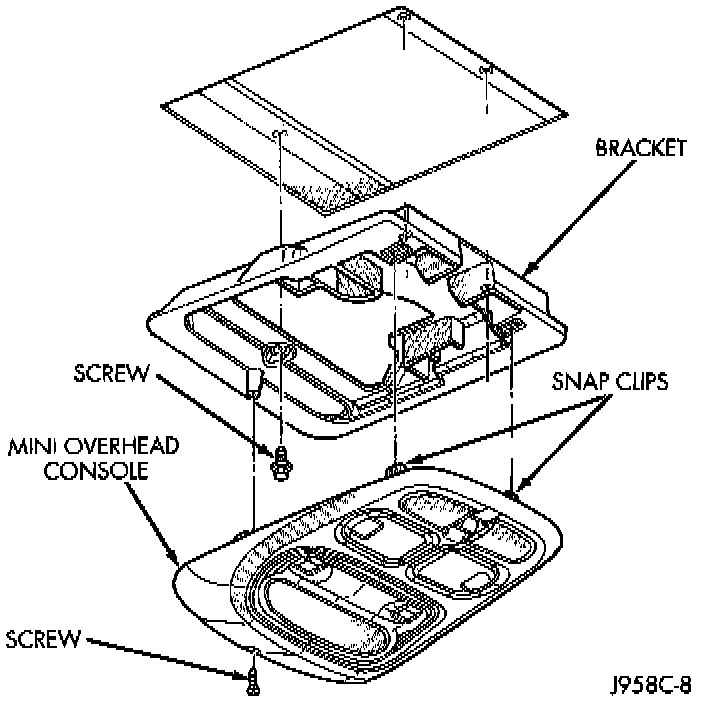

Overhead Console Replacement
REMOVALLong-Type
1. Disconnect and isolate the battery negative cable.
Overhead Control Remove/Install - Long-Type:

2. Remove the forward mounting screw, located in front of the display module.
3. Slide the console forward until the rear of the console separates from the rear mounting bracket.
4. Unplug the wire harness connector from the trip computer, compass, and thermometer display module.
5. Remove the overhead console from the vehicle.
6. Reverse the removal procedures to install.
Short-Type
1. Disconnect and isolate the battery negative cable.
Overhead Control Remove/Install - Short-Type:

2. Remove the forward mounting screw, located in front of the display module.
3. Using a trim stick or other suitable wide flatbladed tool, pry gently downwards at the rear edge of the overhead console housing to release the two snap clip retainers.
4. Unplug the wire harness connectors from the trip computer, compass, and thermometer display module and the power sunroof switch.
5. Reverse the removal procedures to install.